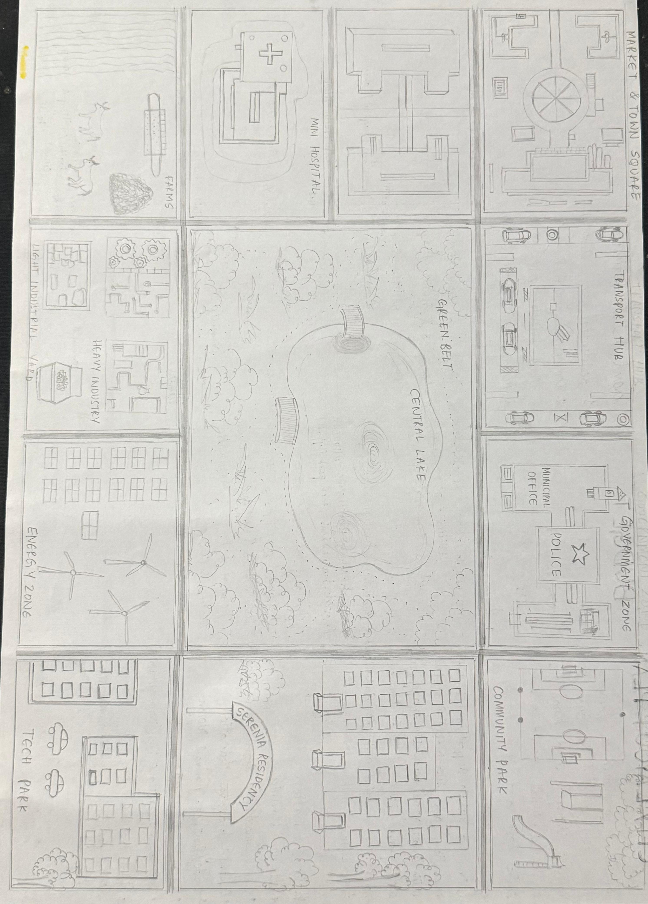
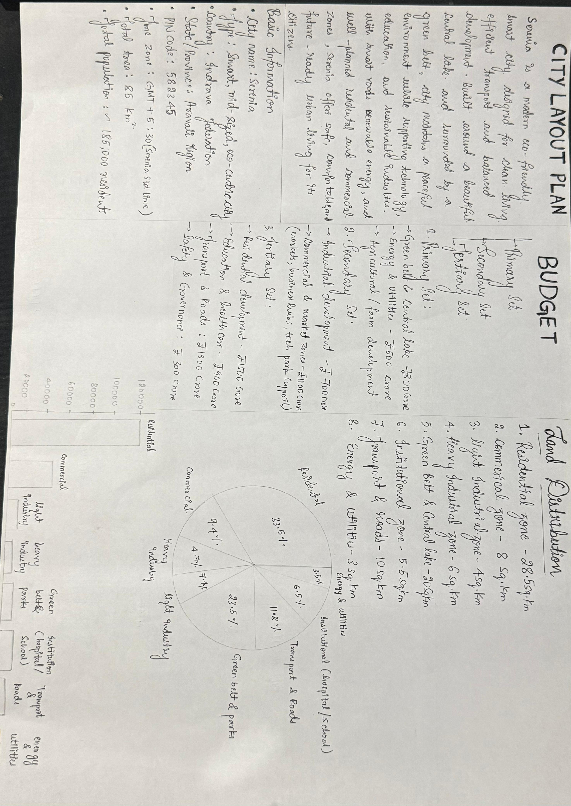

This is the main zoning map of Serenia City, showing Residential Areas, Commercial Zones, Lake, Energy Sector, Government Block, Tech Park, Green Belt, and Transport Hub. Algorithms are mapped to these functional areas.
This page includes planning notes, land-use percentages, design reasoning, and zoning logic. It provides a detailed breakdown of how Serenia was planned and where algorithms apply in each section.
